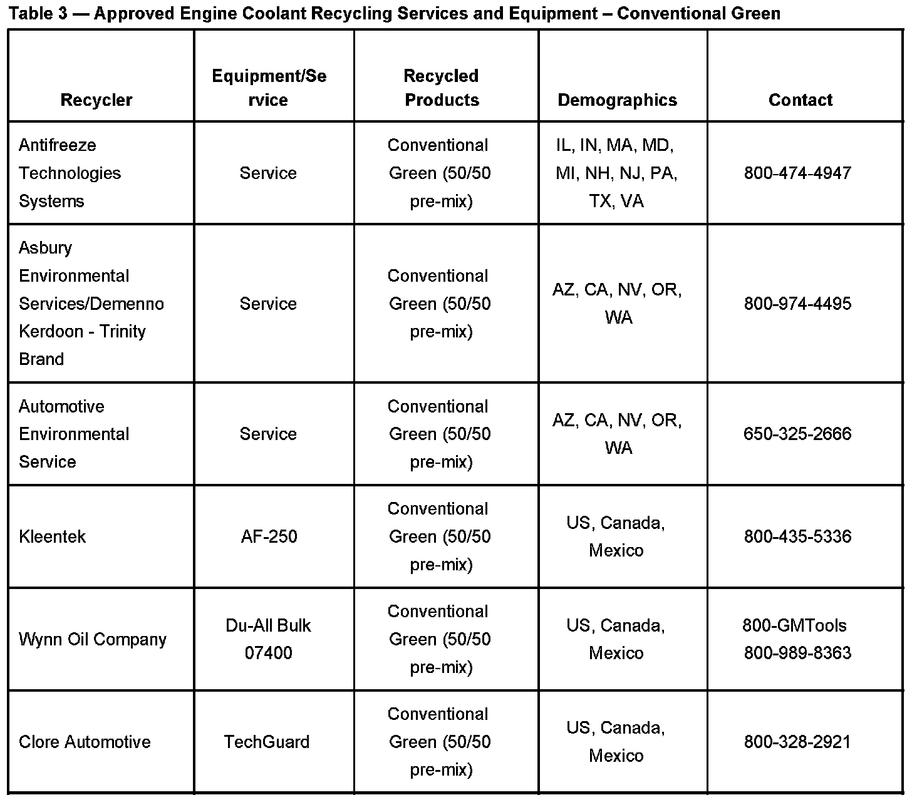

Cooling System - Coolant Recycling Information
Bulletin No.: 00-06-02-006DDate: August 15, 2006
INFORMATION
Subject:
Engine Coolant Recycling and Warranty Information
Models:
2007 and Prior GM Passenger Cars and Trucks (Including Saturn)
2007 and Prior HUMMER Vehicles
2005-2007 Saab 9-7X
Attention:
Please address this bulletin to the Warranty Claims Administrator and the Service Manager.
Supercede:
This bulletin is being revised to adjust the title and Include Warranty Information. Please discard Corporate Bulletin Number 00-06-02-006C (Section 06 - Engine/Propulsion System).
Coolant Reimbursement Policy
General Motors supports the use of recycled engine coolant for warranty repairs/service, providing a GM approved engine coolant recycling system is used. Recycled coolant will be reimbursed at the GMSPO dealer price for new coolant plus the appropriate mark-up. When coolant replacement is required during a warranty repair, it is crucial that only the relative amount of engine coolant concentrate be charged, not the total diluted volume. In other words: if you are using two gallons of pre-diluted (50:50) recycled engine coolant to service a vehicle, you may request reimbursement for one gallon of GM Goodwrench engine coolant concentrate at the dealer price plus the appropriate warranty parts handling allowance.
Licensed Approved DEX-COOL(R) Providers
Important:
USE OF NON-APPROVED VIRGIN OR RECYCLED DEX-COOL(R) OR DEVIATIONS IN THE FORM OF ALTERNATE CHEMICALS OR ALTERATION OF EQUIPMENT, WILL VOID THE GM ENDORSEMENT, MAY DEGRADE COOLANT SYSTEM INTEGRITY AND PLACE THE COOLING SYSTEM WARRANTY UNDER JEOPARDY.
Shown in Table 1 are the only current licensed and approved providers of DEX-COOL(R). Products that are advertised as "COMPATIBLE" or "RECOMMENDED" for use with DEX-COOL(R) have not been tested or approved by General Motors. Non-approved coolants may degrade the coolant system integrity and will no longer be considered a 5 yr/150,000 mile (240,000 km) coolant.
Coolant Removal Services/Recycling
The tables include all coolant recycling processes currently approved by GM. Also included is a primary phone number and demographic information. Used DEX-COOL(R) can be combined with used conventional coolant (green) for recycling. Depending on the recycling service and/or equipment, it is then designated as a conventional 2 yr/30,000 mile (50,000 km) coolant or DEX-COOL(R) 5 yr/150,000 mile (240,000 km) coolant. Recycled coolants as designated in this bulletin may be used during the vehicle(s) warranty period.
DEX-COOL(R) Recycling
The DEX-COOL(R) recycling service listed in Table 2 has been approved for recycling waste engine coolants (DEX-COOL) or conventional) to DEX-COOL(R) with 5 yr/150,000 mile (240,000 km) usability. Recycling Fluid Technologies is the only licensed provider of Recycled DEX-COOL(R) meeting GM6277M specifications and utilizes GM approved inhibitor packages. This is currently a limited program being monitored by GM Service Operations which will be expanded as demand increases.
Conventional (Green) Recycling

Processes shown in the Table 3 are capable of recycling waste engine coolants (DEX-COOL(R) or conventional) to a conventional (green) coolant. Recycling conventional coolant can be accomplished at your facility by a technician using approved EQUIPMENT (listed by model number in Table 3), or by an approved coolant recycling SERVICE which may recycle the coolant at your facility or at an offsite operation. Refer to the table for GM approved coolant recyclers in either of these two categories. Should you decide to recycle the coolant yourself, strict adherence to the operating procedures is imperative. Use ONLY the inhibitor chemicals supplied by the respective (GM approved) recycling equipment manufacturer.
Sealing Tablets
Cooling System Sealing Tablets (Seal Tabs) should not be used as a regular maintenance item after servicing an engine cooling system. Discoloration of coolant can occur if too many seal tabs have been inserted into the cooling system. This can occur if seal tabs are repeatedly used over the service life of a vehicle. Where appropriate, seal tabs may be used if diagnostics fail to repair a small leak in the cooling system. When a condition appears in which seal tabs may be recommended, a specific bulletin will be released describing their proper usage.
Water Quality
The integrity of the coolant is dependent upon the quality of DEX-COOL(R) and water. DEX-COOL(R) is a product that has enhanced protection capability as well as an extended service interval. These enhanced properties may be jeopardized by combining DEX-COOL(R) with poor quality water. If you suspect the water in your area of being poor quality, it is recommended you use distilled or de-ionized water with DEX-COOL(R).
"Pink" DEX-COOL(R)
DEX-COOL(R) is orange in color to distinguish it from other coolants. Due to inconsistencies in the mixing of the dyes used with DEX-COOL(R), some batches may appear pink after time. The color shift from orange to pink does not affect the integrity of the coolant, and still maintains the 5 yr/150,000 mile (240,000 km) service interval.
Back Service
Only use DEX-COOL(R) if the vehicle was originally equipped with DEX-COOL(R).
Contamination
Mixing conventional green coolant with DEX-COOL(R) will degrade the service interval from 5 yrs./150,000 miles (240,000 km) to 2 yrs./30,000 miles (50,000 km) if left in the contaminated condition. If contamination occurs, the cooling system must be flushed twice immediately and re-filled with a 50/50 mixture of DEX-COOL(R) and clean water in order to preserve the enhanced properties and extended service interval of DEX-COOL(R).
After 5 years/150,000 miles (240,000 km)
After 5 yrs/150,000 miles (240,000 km), the coolant should be changed, preferably using a coolant exchanger. If the vehicle was originally equipped with DEX-COOL(R) and has not had problems with contamination from non-DEX-COOL(R) coolants, then the service interval remains the same, and the coolant does not need to be changed for another 5 yrs/150,000 miles (240,000 km)
Equipment (Coolant Exchangers)
The preferred method of performing coolant replacement is to use a coolant exchanger. A coolant exchanger can replace virtually all of the old coolant with new coolant. Coolant exchangers can be used to perform coolant replacement without spillage, and facilitate easy waste collection. They can also be used to lower the coolant level in a vehicle to allow for less messy servicing of cooling system components. It is recommended that you use a coolant exchanger with a vacuum feature facilitates removing trapped air from the cooling system. This is a substantial time savings over repeatedly thermo cycling the vehicle and topping-off the radiator. The vacuum feature also allows venting of a hot system to relieve system pressure. Approved coolant exchangers are available through the GMDE (General Motors Dealer Equipment) program.
For refilling a cooling system that has been partially or fully drained for repairs other than coolant replacement, the Vac-N-Fill Coolant Refill Tool (GE-47716) is recommended to facilitate removal of trapped air from the cooling system during refill.

Disclaimer